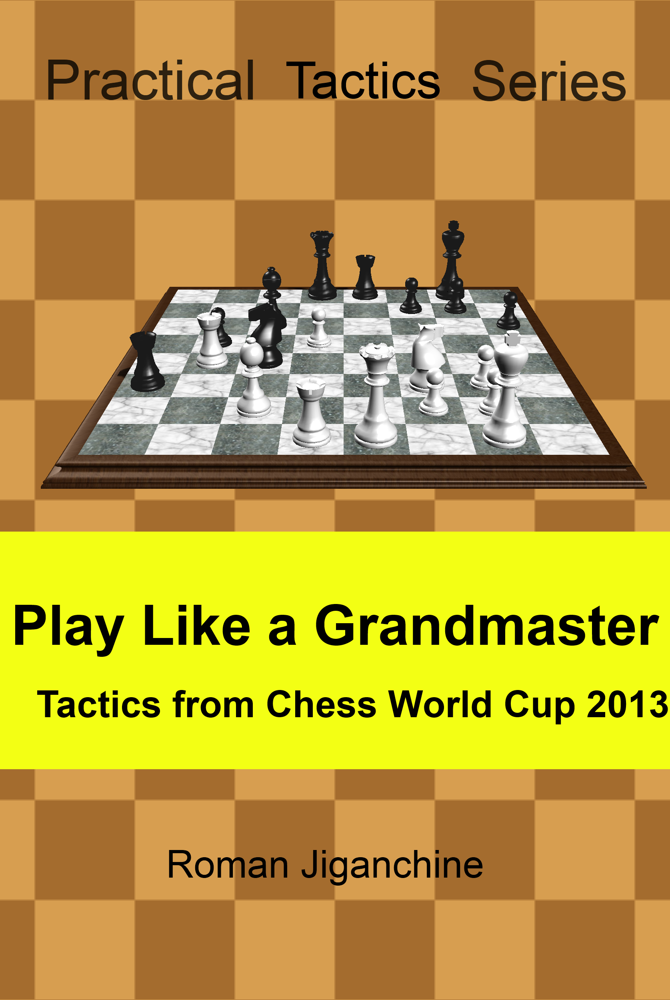

Play Like a Grandmaster - Tactics from Chess World Cup 2013
Created Thursday 07 December 2017
Chess World Cup 2013 took place in Tromso, Norway between August 10 and September 3, 2013. It included 128 strongest players in the world with very few leading players missing, and was won by Vladimir Kramnik, with Dmitry Andreikin as a runner up and a qualifier to the Candidates Tournament.
This book contains brief overview of the tournament, with focus on combinations discovered by the players, including Kramnik, Svidler, Grischuk, Morozevich, Shirov, Kamsky, and many others. The level of difficulty varies between different positions, but the more complicated positions are explained in greater detailed so that most tournament players can follow the logic behind the grandmasters' thinking.
The format was specifically designed for e-readers. Most chapters have examples from practical games of chess champions of the past and present, such as Fischer, Karpov, Anand and Carlsen, followed by puzzles for the reader to solve. That should reinforce newly learned concepts and help get a better sense of the pawn structures discussed throughout the book. There are also questions for the reader to answer at the key moments of the games. To see solutions for puzzles and questions - just go to the next page.
The book is the second in the "Practical Tactics Series", the first being "Counterattack with Alexander Morozevich".
